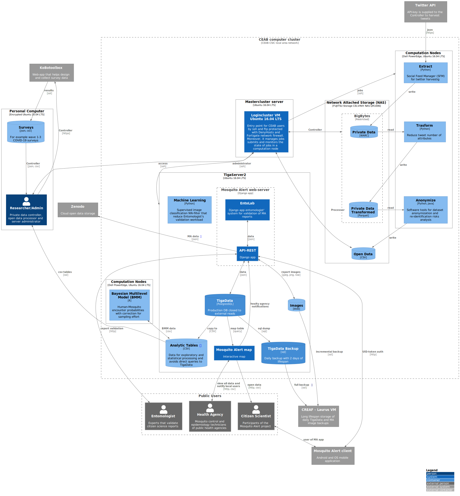

Mosquito Alert Data Portal
Contents
Mosquito Alert Data Portal¶
1. Introduction¶
The scope of this documentation is to provide:
Metadata description of datasets that are used in the Big Mosquito Bytes (BMB) project
Data access examples by Python scripts
This work aims to implement FAIR principles into Mosquito Alerts data management system in order to ease data extraction for partners via API and code-examples.
2. Current state of the art¶
CEAB-CSIC has implemented a data management system based on FAIR principles in order to ease metadata visualization and data access via API and code-examples. In the following the data management system is presented from a FAIR perspective.
2.1. Findable data¶
Metadata templates are built on Schema.org metadata standard following the guidelines from SOSO published by the Earth Science Information Partners and the draft document “DCAT-AP to Schema.org Mapping” published by the European Commission’s Joint Research Centre.
The metadata information relative to a dataset is stored in .json-ld files (i.e. JSON for Linking Data) that are validated with Google’ Structured Data Testing Tool.
Whenever possible, DOI identifiers are used for linking to datasets. Since the management system is uploaded to a GitHub repository, control version of metadata files is inherently performed by tracking changes in any set of .json-ld files.
2.2. Accessibility¶
A static website portal was built to ease metadata visualization and dataset access. The static website is hosted free of charge and maintenance costs on GitHub Pages. A public portal relative to Mosquito Alert open data is available for general public. For the moment, the full metadata portal is only available on a private repository since it contains not only public but even private datasets.
Every metadata has an associated Python script (i.e. jupyter notebook tutorial) that explains how to access the relative dataset distribution. The web-portal is automatically re-generated anytime a new metadata is added.
In the following table are listed all the datasets currently available at the metadata web-portal with the respective licenses and access restrictions. Private data is stored in a restricted access disk storage on the CEAB-CSIC computer cluster. Note that if a dataset is labeled as Private it does not necessarily imply that it cannot be distributed, since their access may be guaranteed after signing a ad-hoc contract of use.
Code-examples could be executed from a Binder interactive session: 
Dataset |
Project |
Description |
License |
Example |
Format |
|---|---|---|---|---|---|
MosquitoAlert |
Yearly validated reports of bites, breeding sites and adult mosquito encounters. |
Public CC0-1.0 |
|
||
MosquitoAlert |
Yearly validated and not validated reports. Available on demand for research purposes only. |
Private |
|
||
MosquitoAlert |
Pictures of adult mosquitos and breeding sites. Classification labels are provided for ML training for the pictures of mosquitos visualized on the MosquitoAlert map. |
Public CC0-1.0 |
|
||
MosquitoAlert |
Daily participant counts and sampling effort in 0.025 and 0.05 degree lon/lat sampling cells. |
Public CC0-1.0 |
|
||
MosquitoAlert |
Background tracks of MA participants in 0.05 and 0.025 degree longitude/latitude sampling cells with minimal processing. |
Private |
|
||
MosquitoAlert |
Tables from MA database selected for analytic purposes. Available on demand for research purposes only since it could contain user sensible information. |
Private |
|
||
MosquitoAlert |
Identifier references to report pictures that appear on the public MA webmap. This is a public version of the tigaserver_app_photo dataset of the analytic_tables catalog. |
Public CC0-1.0 |
|
||
MosquitoAlert |
Results from the Bayesian multilevel models of bites and target species distribution that feed the MA raster maps. |
Public CC0-1.0 |
|
||
MosquitoAlert |
Daily estimates of MA probabilities for Ae. albopictus in Spain, aggregated by municipality. |
Public CC0-1.0 |
|
||
MosquitoAlert |
Mosquito Weather Index hourly worldwide computed on ERA5 and NCEP data on 0.25 degree raster-grid. This dataset is not intended for general public access because of its size. |
Private |
|
||
MosquitoAlert |
Real time mosquito presence count with on-site Irideon senscape smart traps. Proprietary dataset, available on demand for research purposes only. |
Private |
|
||
tigadata |
MosquitoAlert |
TigaData database daily backup dump. Intended for internal use only. |
Private |
|
|
Public Health |
Yearly dengue cases in Spain monitored by RENAVE. Contains sensible personal information. |
Private |
|
||
Environment |
Weather station data of the XEMA network of Meteorological Service of Catalonia (Meteocat) |
|
|||
Environment |
ERA5 hourly worldwide weather on single levels from 1979 to present with land mask on 0.25 degree raster-grid. Data is not accessible for the external public but only for internal use. |
|
|||
Environment |
ERA5 monthly average weather for Spain on single levels from 1979 to present with land mask on 0.25 degree raster-grid. Data is not accessible for the external public but only for internal use. |
|
|||
Environment |
NCEP-NOAA hourly worldwide weather 5-days forecast on 0.25 degree grid. Data is not accessible for the external public but only for internal use. |
Public CC BY 4.0 |
|
||
Environment |
Multi-band raster with resolution 0.025 degree and worldwide coverage of Köppen-Geiger climatic regions, estimated population density for 2030, Global Administrative Areas (GADM) and terrestrial ecoregions of the world. |
Public |
|
2.3. Interoperability¶
Interoperability of the data is guaranteed through the use of controlled Schema.org vocabularies. In concrete, the requested vocabulary terms used to describe a dataset are: name, description, url, sameAs, identifier, license, citation, creator (with values: type, id, name, identifier, contactPoint), variableMeasured (of type Property with values: name, description and unitText, dataType), variableMeasured (by type Property with values: name, description and unitText, dataType), measurementTechnique, temporalCoverage, spatialCoverage (with values: type, name, sameAs) and distribution (of type DataDownload with values: name, description, encodingFormat, url, contentUrl, contentSize).
2.4. Reusability¶
The degree of reuse permitted when the data are made available to other researchers and the wider public is defined by the relative license or by an ad-hoc data use contract usually made for a specific data request.
3. Pending tasks¶
The current data management system is based on a static web-portal that serves as a live-document that is easy to update and manage. However, it is not an interactive API that allows clients to access data. Researchers are required to have basic programming skills to implement the necessary Python scripts for data access. The main pending tasks are:
Review and complete missing metadata information and add code examples.
Add valuable datasets from project partners to the data management system.
Publish the current metadata web-portal on the Mosquito Alert official website under the Open Data section.
Port workflow automation (i.e. task orchestration) relative to dataset management (e.g. daily data updates, archiving, etc.) and analysis (i.e. transformations, modeling, etc.) from Crontab to a more feature rich and modern framework like Prefect or NextFlow.
Apart from the pending tasks, there is a number of tasks that could be performed in order to improve the current data management system:
Metadata template and metadata could be created with the CEDAR platform in order to improve metadata publication and sharing.
Add data previews like figures for geo-raster datasets and summary tables to dataset access code-examples to improve data description.
Build an API that allows clients to access data without the need to set up a customized Python environment.
3. Deviation from initial planning¶
The first idea was to build an API to serve datasets stored in a relational database to external users. However, due to the diversity of data formats and system requirements (i.e. dedicated server machine) this option was replaced by a simpler solution of file storage on a secure disk partition of the CEAB cluster and other data repositories like Zenodo. On the other hand, already available APIs were used to request already public datasets, like the Climate Data Store API to retrieve ERA5 weather reanalysis datasets of ECMWF. This deviation from the first plan has the following advantages:
Removes the need to set up a dedicated server and thus reduces the costs of infrastructure and maintenance by making the data access less dependent on future project refinancing.
Reuse of cheap, easy to handle and robust software infrastructures (e.g. CEAB cluster, Zenodo and GitHub).
API development and database management are replaced by data workflow automation and files/blobs which are easy to distribute and scale up for ETL applications (extract, transform and load).
However, there are still a series of disadvantages to consider:
A user needs to have enough skills to set up a programming environment to access or download a given dataset. Note however, that it is expected that researchers interested in those datasets have the required skills and that the non professional public (i.e. citizens) are still able to view some of their data within the MA map application.
Data visualization and interaction are not possible (e.g. data dashboard). However, it is possible to give a data preview since the static web-portal allows linking images and summary tables to data access code-examples.
4. Implementation details¶
Note
Anytime a source metadata .json file are modified or updated we need to run build_info.py to build the html dataset tables.
Data access Python scripts use metadata .json files to get all needed information. Scripts use a percentage formatting to denote executable code cells (# %%) and markdown content cells (# %% [markdown]). This allows to use editors like Visual Studio Code, Spyder, etc. and to perform versioning control easily.
Jupyter Book is used to build this documentation. Thus, data access scripts in .py should be converted to the .ipynb format by JupyText application.
Note
After any modification to .py source files, we should take care to update the ipynb files by running build_ipynb.sh before building a new version of documentation.
5. Data Flow Diagram¶
